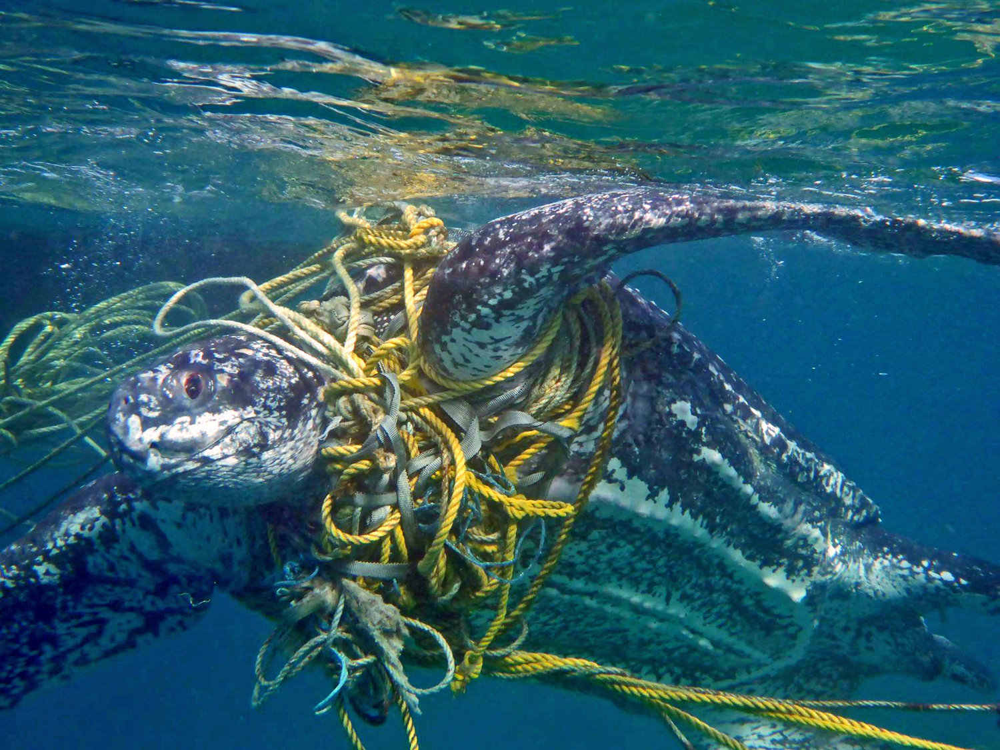

|
FISHERIES BYCATCHThousands to tens of thousands of sea turtles are thought to perish each year as a result of the fishing business. Turtles caught in gill nets, trawls, and longlines are discarded as bycatch. Additionally, the disruption to their food supply and habitat influences those who can evade fishing nets. Turtle excluder devices (TEDs) are being promoted by WWF for use in shrimp trawlers, this will help the marine turtles to escape the fishing nets. |
|  | COASTAL DEVELOPMENTBecause of receding coasts, sea turtle habitats are devastated every year. Sea turtle food sources and nesting places are severely impacted anywhere there is boat vessel traffic, anytime a new hotel or high-rise is put up along the shore, and everywhere the sea bottom is dug up and the beach erodes. the solution for this is to not build any kind of structures on the beach. |
 |
CLIMATE CHANGEThe extent to which sea turtles can be impacted by climate change is only now coming to light. Climate change has the potential to alter the natural sex ratios of hatchlings, raise the risk of disease outbreaks, and increase the frequency of extreme weather conditions that devastate coral reefs and beaches used for nesting. |